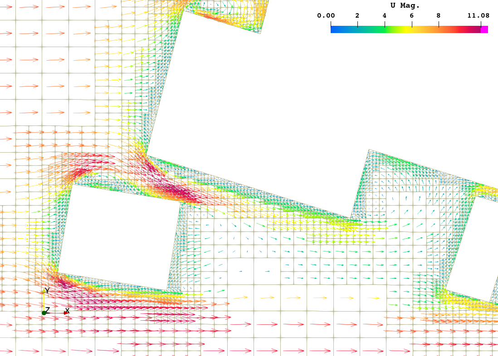

旧 R8：探索三种预测任务
已有实验在简化的固定几何上，完成稳态、端点重组与状态递推的实现和验证。它们复用同类骨干与工具链，各自训练权重。
为什么要区分任务？
稳态预测给定工况的最终场；端点重组利用端点场与时间条件构造响应；状态递推从当前状态和控制预测后续状态。时间规律来自任务设计与训练，不是 attention 自动保证。
旧 R8 的 8 维是四区送风 + 四区热源，与新 CHT 的 8 维控制定义不同。这些结果不能直接作为新 CHT 瞬态精度的证据。
城市中的风，机柜之间的热。
用两个工程问题，串起我的模型实践、实验结果与尚未解决的问题。
以建筑群周围的稳态流场为起点，
探索 DoMINO 从几何到速度、压力的映射。

把建筑几何编码成可读取的特征场。每次查询一个位置，提取附近特征，结合位置与工况，得到这个点的预测。
构建建筑几何、OpenFOAM 流场与模型数据之间的处理链，检查几何、网格、工况输入和归一化的一致性。数据接口的细节，会直接改变模型实际学到的问题。
在部分加入 N–S 约束的试验中，物理残差明显降低，但数据拟合与验证结果没有同步改善。这支持继续排查损失平衡、离散误差与数据一致性，不能据此宣称物理约束已经提高了泛化能力。
将单元中心结果外推为节点值时，近壁数据可能与壁面约束冲突。后续改用单元中心体积场，并修订数据处理和划分。方程、标签与边界需要描述同一套物理量、位置和单位。
DoMINO 的数据监督可以叠加物理残差。再往前一步：如果只用方程和边界，不给流场标签呢？我用一个圆柱绕流案例来理解 PINNs。
输入 (x, y)，输出 (u, v, p)。对坐标自动微分，构造连续性、动量与边界残差，再更新网络参数。
连续坐标网络对输入坐标自动微分，得到空间导数；本例依靠方程和边界求解一个固定问题。
在数据监督上增加残差项；所用路径通过预测值的邻域最小二乘等数值方法近似空间导数。训练仍通过自动微分计算损失对参数的梯度。
两者都可以注入物理信息。区别在于任务设定、导数构造与监督方式；这些是具体实现选择，不是所有 PINNs 或 DoMINO 的唯一做法。
从稳态温度场走向瞬态预测。
以六机柜数据中心为场景，探索 GeoTransolver。
154065
在当前固定几何的 CHT 实现里，把空间点信息放入 local 分支，把工况放入 global 分支。通过学到的状态聚合，使全场信息与控制条件共同参与预测。
在简化的固定几何上，完成稳态、端点重组与状态递推的实现和验证。它们复用同类骨干与工具链，各自训练权重。
稳态预测给定工况的最终场；端点重组利用端点场与时间条件构造响应；状态递推从当前状态和控制预测后续状态。时间规律来自任务设计与训练，不是 attention 自动保证。
旧 R8 的 8 维是四区送风 + 四区热源，与新 CHT 的 8 维控制定义不同。这些结果不能直接作为新 CHT 瞬态精度的证据。
建立六机柜的流固传热场景，完成新数据上的稳态训练，并在本地接通工况输入、预测场与可视化。本页展示的仍是已有 CFD 结果。
512 个工况，384 / 64 / 64 划分；固定几何，98,376 个体积单元。测试集位于控制空间的外侧区域，需要结合低风量、高热源等困难组合解释误差。
归档测试：三组区域平衡的温度 RMSE 约 0.208 K；空气体积加权温度 RMSE 约 0.282 K。两者统计方式不同，不能混用。这些数值不证明跨几何或瞬态精度。
积累新场景瞬态数据，检查状态定义与时间覆盖，再验证端点响应或递推模型。下一步重点是长期误差、困难工况与展示集成。
local / global 的组织方式便于接入空间点、当前场与控制条件。相较 DoMINO 多尺度几何、查询读取与局部解码的组合，我更喜欢这条处理路径；这是实现与维护上的取舍。
项目已沿这条骨干搭建三类任务，并延伸到 CHT 稳态与本地交互。公开行业案例提供了尝试方向，但不能代替本项目验证。
目前没有同数据、同预算、同硬件的公平对照，因此不声称 GeoTransolver 比 DoMINO 更准、更快或更省数据。
求解一道 PDE、学习一族工况、预测时间演化，是不同问题。输入、数据划分和验证方式都应围绕任务来定义。
残差能够写出来，不代表优化容易。需要同时检查数据误差、边界、离散方式与损失尺度。
模型名字不能代替实验。固定几何上的结果、旧场景的时间响应和新场景的稳态精度，都有各自的适用范围。
| 本页案例 | 输入与主要机制 | 如何学习 | 验证的边界 |
|---|---|---|---|
| DoMINO · 建筑风环境 | 几何、工况与查询坐标；CNN 几何编码 + 局部解码 | CFD 监督，另有物理约束试验 | 需检查几何分组、空间数据与工况覆盖 |
| PINNs · 圆柱绕流 | (x, y) → MLP → (u, v, p) | 本例用方程与边界；坐标自动微分 | 固定几何、固定工况的解 |
| GeoTransolver · CHT | 点特征与全局控制；软状态聚合与 attention | 已有 CFD 数据监督；任务分别训练 | 新 CHT 稳态与旧场景瞬态分别看待 |
持续整理中。这里保留结果，也保留试验没有按预期工作的地方。下一步逐项补齐实验对照、训练细节与模型内部交互。